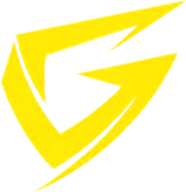

Server unreachable
Can't reach GRYND
GRYND's server didn't respond. It may be briefly unavailable — trying again usually fixes it.
Your account and saved data stay on GRYND's servers. If a match was in progress, it continues on the server — reconnecting here is the only way back to it.